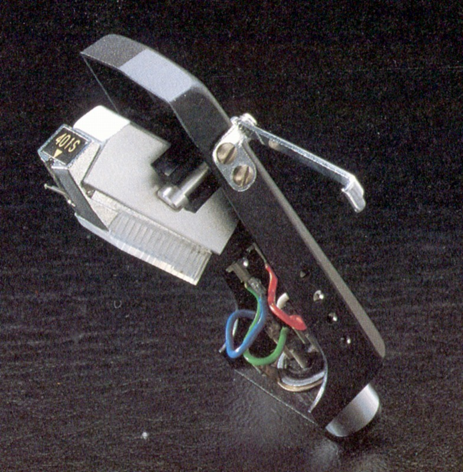
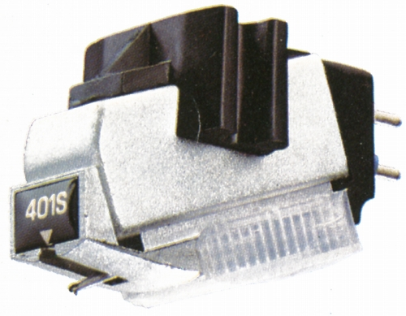
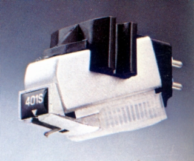
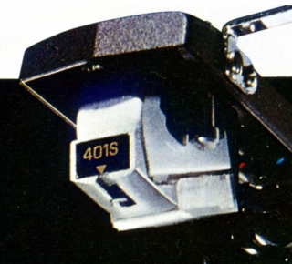
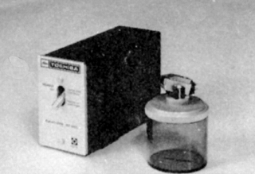
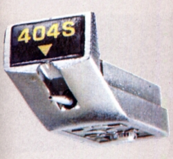

C-401S




■価格 19,000円
■発電方式 エレクトレット・コンデンサー型
■出力電圧 40mV(1kHz・3.5cm/sec)
■針圧 1.2〜2.0g
■再生周波数帯域 20-35,000Hz
■チャンネルセパレーション 25dB以上/1kHz
■チャンネルバランス 1dB以下
■コンプライアンス 12×10-6cm/dyne
■負荷抵抗 30kΩ以上
■直流抵抗
■インピーダンス
■針先 0.3×0.8mil楕円
■自重 6.5g
■交換針 C-401S-EあるいはN-401S-E(9,500円)
■発売 1971年
■販売終了 1978〜79年頃
■備考 価格は1973年頃のもの
ヘッドシェル付き
専用イコライザー SZ-200
「東芝」時代に登場した製品で、同社の
エレクトレッド・コンデンサー型の初号機
C-400、C-404X、C-407Sと交換針の互換性あり
SZ-200とセットで26,500円（1973年頃）販売されていた記録あり

他にCD-4再生用のスタイラス、N-404S-EX(12,000円)あり

なおこのカートリッジに近似すると思われるモデルに「C-402S」がある。
当時のカートリッジ付きのプレイヤー上位機種(SR-80など）付属の
カートリッジでスペックは以下のとおり。
■発電方式 エレクトレット・コンデンサー型
■針圧 2.0〜2.5g
■再生周波数帯域 20-35,000Hz
■チャンネルセパレーション 25dB以上/1kHz
■チャンネルバランス 1dB以下
■コンプライアンス 10×10-6cm/dyne
■針先 0.5mil